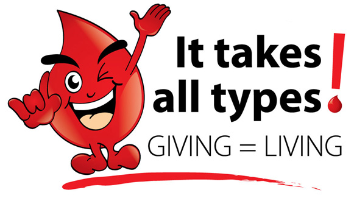

Did you know?
1)Donating blood saves life and improves health. 2) The amount of blood in an average adult is 10 pints. 3) The demand for blood in Kenya is currently 200,000 units a year against a collection of 130,000 units leaving a shortfall of 70,000 units a year. 4)There is no substitute for human blood Give the gift of life. Donate blood
Do you want to be a donor?
Sign UpFACTS!!
1) 1 organ donor can save up to 8 lives. 2) Almost anyone can be a donor, despite age or medical history 3) Organs are allocated according to medical need, blood and tissue type, height and weight. 4) There is an eye cornea storage bank in Kenya
Register as an Organ donor. Save a life
Already a donor?
Sign inDonation Regions in Kenya

Donation Regions(Regional Transfusion Centers) in Kenya include Nairobi, Mombasa, Embu, Nakuru, Eldoret and Kisumu. There are 14 satellite centers located in Machakos, Kisii, Voi, Meru, Naivasha, Kakamega, Kericho, Nyeri, Garissa, Malindi, Thika, Lodwar, Bungoma and Kitale.